Using Android in Real-Time Embedded Systems
By Trevor Whitney
Why use Android?
How many people in this room have Internet enabled computers that they carry, all day long, in their pockets?
As we include more small, embedded systems in our daily lives, we will expect more interoperability between them. We will expect devices to be able to communicate with one another, as well as with the Internet, for easier access to information. Android can add this capability to real-time devices, such as medical equipment.
Example Case 1: Anesthesiology
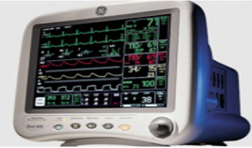
This is a machine used by anesthesiologists to monitor brain state. It's implementation required 2-D graphics, networking, USB connections, and a simple file system. It was built using Nucleus OS, a real-time operating system developed by Mentor Graphics.
Example Case 2: Blood Glucose Monitoring
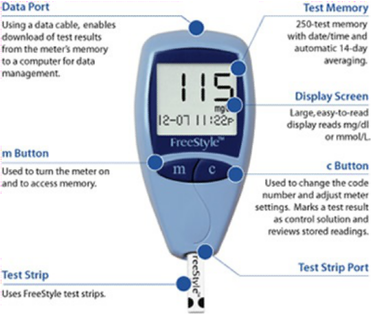
This is a blood glucose meter, an essential medical device to the daily survival of many type 2 diabetics. It requires a simple user interface, USB, 802.11 wireless, and was again built on Nucleus OS.
Don't Reinvent the Wheel
In both of the previous cases, the drivers for USB and networking had to be written for that particular device. The graphics display also had to be created, particularly in the case of the brain monitor. This is too analogous of the days of DOS, where all programs had to write their own drivers.
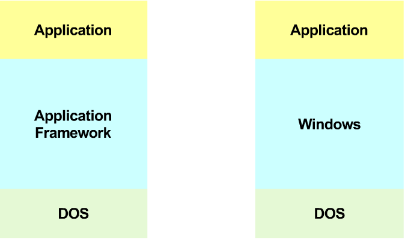
Android Bridges The Gap For Embedded Systems
Android provides the drivers and libraries developers need to make engaging user interfaces and Internet enabled devices.
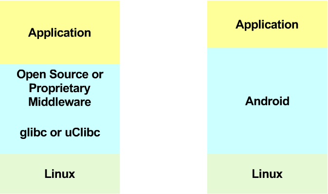
How Android Bridges The Gap
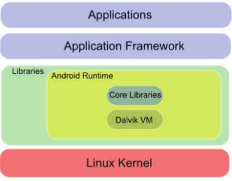
Linux Provides:
- Networking
- Security
- Drivers
Android Libraries Provide:
- Media Encoding & Decoding
- 2D and 3D Graphics Based on OpenGL ES
- SQLite Database
- Bionic C Library
Is Android Ready for Real-Time?
Evaluating Android OS for Embedded Real-Time Systems
By Claudio Maia, Luis Nogueira, and Luis Miguel Pinho from the CISTER Research Centre at the Polytechnic Institute of Porto's School of Engineering.
Since the the public release of Android as an open source operating system, it has constantly been improved and expanded in terms of features and supported hardware. While originally intended for mobile phone platforms, Android has gained acceptance in the embedded systems community and is continually being extended to new types of devices. One area that has yet to be deeply explored, however, is the real-time capabilities and potential of this operating system. The above paper conducts an academic exploration into this issue. There is no actual experimentation, but there is a careful analysis of the Android source code to determine it's limitations for use in real-time applications in order to suggest various directions Android development would have to move in to make it suitable for real-time applications. The paper is a part of the Cooperative Embedded Systems project, or CooperatES. Their primary focus was analyzing Android for use in soft real-time applications, and most of their solutions involve modifying Android itself.
Why Android Is Not Ready for Real-Time
Android programs run inside the Dalvik VM, which executes Java bytecode. The Dalvik VM relies on the Linux kernel to perform all scheduling operations. This VM does support threads, and each thread can be assigned a priority between 1-10, which each map to Linux nice values in the 100-139 range, the range reserved for normal, as in non real-time, tasks. As a result, all threads running on top of the VM will be scheduled with SCHED_OTHER, and will thus be scheduled using the fair scheme provided by the Linux kernel. While Linux does support two real-time scheduling classes, SCHED_RR for a round robin scheduling policy, and SCHED_FIFO for first in first out scheduling policy, neither of these are available to threads running on top of the VM.
CFS - Completely Fair Scheduler
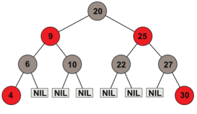
Processes scheduled using the SCHED_OTHER class will be scheduled using the standard Linux scheduler, known as the "Completely Fair Scheduler". This scheduler uses a balanced binary tree like the one above. The processes with the highest need for the processor are on the left, and those with the least need on the right. The numbers in the circle represent the "virtual runtime", or amount of time that has been provided to a given task. The scheduling algorithm starts with the left most node. Each task accounts for the CPU time taken during each execution cycle, and adds that to it's previous virtual runtime. The task is then re-inserted into the tree with the new value. This scheduling algorithm gives priority to tasks that have had less time to run, and therefore assures a fair execution time for all. While this may be a good scheduling algorithm for non-critical systems, it cannot make any real-time guarantees.
The Bionic Droid
Android provides it's own implementation of libc, the standard Linux C library, called bionic. Bionic has it's own implementation of the pthread library which does not support process-shared mutexes or condition variables. As we remember from class, generic OS thread libraries provide no fixed guarantees about when threads will run, which is not suitable for real-time systems. Furthermore, we learned how to use mutexes to control, to some degree, the behavior of systems. While the Dalvik VM does support thread-mutexing and thread condition variables in a limited manner, not having them as a part of the bionic pthread implementation makes it much harder for developers to right predictable code suitable for a real-time environment.
Interrupts and Memory
Interrupt Priority
Interrupts have the highest priority in Linux. Since Android is built on the standard Linux kernel, this is true for Android as well. Thus, high priority tasks, where limiting execution time is essential to meeting hard real-time deadline, could still be interrupted.
Memory allocation
Linux memory operations, such as accounting, allocation, and reallocation all suffer from an unbounded and non-deterministic behavior. Thus, it is not possible to define and measure how long these operations will take, which makes it impossible to guarantee hard real-time deadline. This is also not acceptable for a real-time system.
Global Manager
In order for Android to work in a real-time application, a global manager that has a complete knowledge of an application's needs and the system's status is needed. Furthermore, a scheduler which can interact with, or at least react to, this manager is also required. The paper I read proposed four possible solutions to provide this.
RT Linux with RT VM
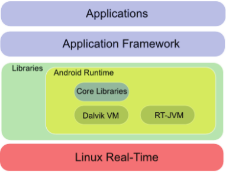
This approach replaces the underlying Linux kernel with a real-time Linux system, like RTLinux or Nucleus. It also replaces the Dalvik VM with a real-time VM. This would require Android applications to be re-compiled to run on the new VM, and only provides soft real-time guarantees.
RT Linux with Dalvik Extensions
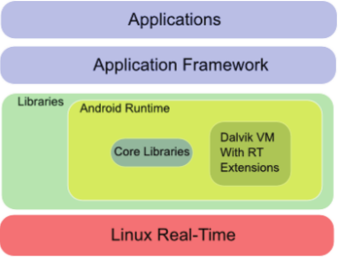
This approach again replaces the underlying Linux kernel with a real-time capable kernel, but maintains the Dalvik VM and merely extends it to enable real-time functionality. Android applications may or may not have to be recompiled for this extended VM, and this architecture also only provides soft real-time guarantees.
RT Linux and Native Applications
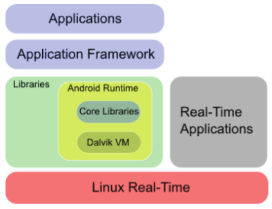
This approach simply replaces the underlying Linux kernel with a real-time kernel, and then runs all real-time applications natively so that they use the kernel directly. This bypasses most of the android architecture, which not only prevents the use of most android applications, but seems to negate the purpose of adding android to a real-time system in the first place.
Android on a Real-Time Hypervisor
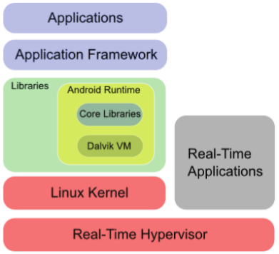
I think this is the best approach. It requires no modification of the Android operating system, and is the only approach that is capable of hard real-time guarantees. There are already real-time hypervisor operating systems for embedded systems like PikeOS that support the visualization of Android. Therefore, this approach can be implemented immediately without having to re-write and Android code.
Sysgo makes an embedded OS called PikeOS. PikeOS is a real-time hypervisor that can run a variety of operating systems, which it calls "personalities", that have been modified to work with they hypervisor in PikeOS. As of the latest version of PikeOS, Android is a supported "personality". The PikeOS micro-kernel is the global manager that is needed to adopt Android into the the world of real-time embedded systems.
PikeOS Partitioning
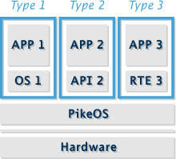
The PikeOS micro-kernel allows partitioning, to create an isolated environment for various operating systems, real-time environments, and APIs on one system. Applications run in their respected partition and are isolated from the applications in other partitions. Each partition receives it's own set of system resources, and everything is managed my the PikeOS micro-kernel.
Remember Scheduling?
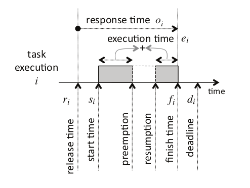
Just a quick reminder of some terminology :)
PikeOS Scheduling

The PikeOS scheduling system combines time and priority based scheduling. Periods, what they call "time slices", are statically set ahead of time. A time slice is the response time allotted for a given task. Inside each period, tasks are executed based on priority. Real-time tasks (executed on real-time partitions) are given a higher priority. Each real-time task is given a period to execute in. If the execution time for the real-time task ends up being less than the time alloted for the period, the remaining time is dynamically allocated to run lower priority tasks, which are load balanced using a round-robin scheduler. Thus, for example, we could have a partition running Nucleus that would handle real-time code, and be given a higher priority than our Android partition running non-real-time tasks.
Conclusion
The popularity of Android is growing quickly in the embedded systems community. It's Linux kernel and core libraries provide many features that make the development of applications quicker and easier. Using Android, developers can quickly add USB and networking capabilities to their devices, as well as create easier to use and more engaging interfaces. This is particularly useful for medical applications, where many of the clients are elderly. However, medical applications often have real-time requirements, which are often safety and even life critical, which Android is not suited to handle on it's own. Through the use of visualization, we can combine the rapid-development and usability gains from Android with a real-time operating system on an embedded system.
/